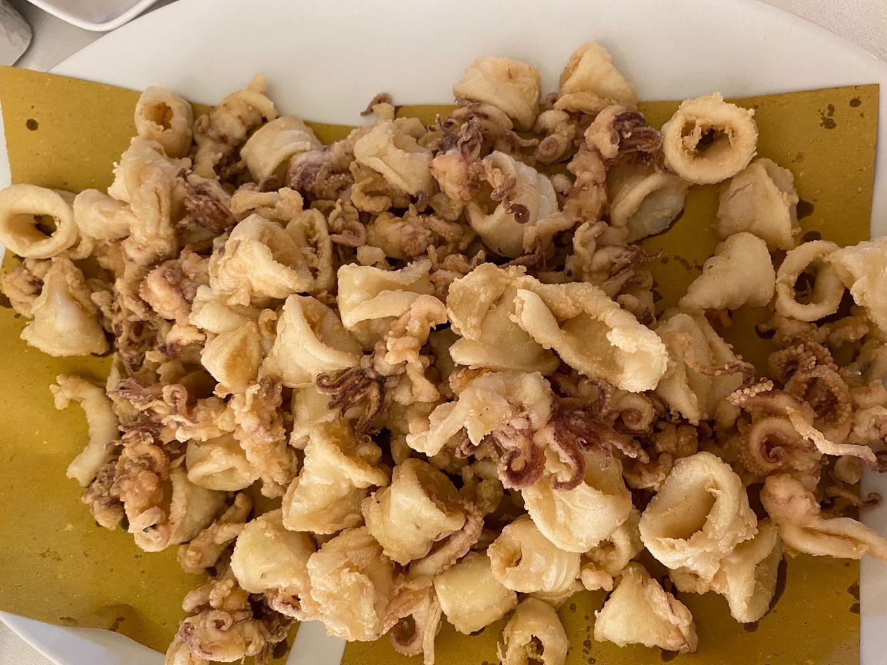
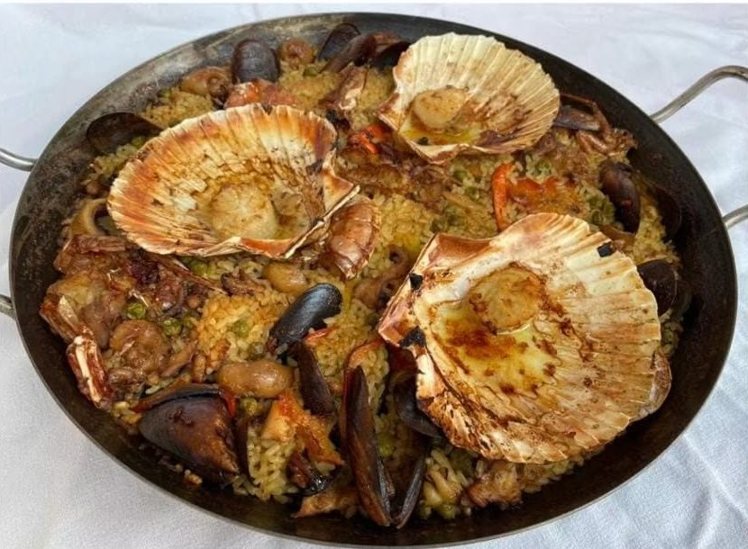
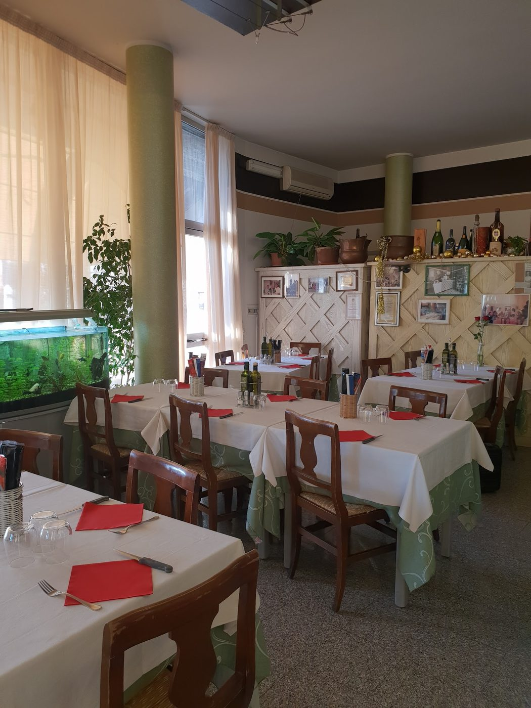

Aperti la sera, dal martedì alla domenica
Siena
Ristorante Pizzeria
In via Fantoni dal 1986.
La nostra pizza ha il 15% di farina di soia: viene sottile, croccante e molto digeribile. E poi il pesce, dagli spaghetti allo scoglio al fritto misto. Ti aspettiamo la sera, dal martedì alla domenica, anche da asporto.

Una linea dal 1986
Come la S del nostro logo: un tratto solo, dalla prima pizzeria di Villafranca a oggi. Scorri e seguilo.
-
Prima di noi
Il Moderno
Prima di via Fantoni c'era la pizzeria Moderno: la prima pizzeria nata a Villafranca.
-
1986
Via Fantoni 22
Nel 1986 lasciamo il Moderno e apriamo qui, con un nome nuovo: Siena, ristorante e pizzeria.
-
L'impasto
Il 15% di soia
Nella nostra pizza c'è il 15% di farina di soia: per questo è sottile, gustosa e molto digeribile. Nelle recensioni la parola che torna più spesso è «croccante».
-
La cucina
Il pesce
Spaghetti allo scoglio, risotto ai frutti di mare, risotto al nero di seppia, fritto misto: da noi non c'è solo la pizza.
-
Su prenotazione
La paella
Su prenotazione prepariamo anche la paella alla valenciana: diccelo quando chiami per il tavolo.

-
Ancora oggi
Anche da asporto
Tutti i nostri piatti, non solo le pizze, li prepariamo anche da portare a casa. Chiama, ordina e passa a ritirare.

La sala
Tovaglie bianche e tovaglioli rossi: ti aspettiamo qui, la sera dal martedì alla domenica. Abbiamo anche tavoli all'aperto, il menu per bambini e piatti vegani.
Le serate a tema
Ogni tanto organizziamo serate su prenotazione: la serata dei risotti, «Risotto… che passione!», paella e sangria, San Valentino. Le annunciamo su Facebook e Instagram.
Detto da voi
Qualche riga dalle recensioni che ci avete lasciato su Google.
-
«Pizza molto buona e leggera. Molto sottile e croccante, ma deve piacere il genere.»
Mattia P., su Google
-
«…un risotto al nero di seppia che sa di mare, di fresco, di poesia! il servizio gentile e presente.»
Alessandra C., su Google
-
«E sono tutti gentilissimi : un piacere ritornare ti senti a casa !»
Alice V., su Google
Orari
Controlla gli orari qui sotto
| Lunedì | Chiuso |
|---|---|
| Martedì | 19:00–23:00 |
| Mercoledì | 19:00–23:00 |
| Giovedì | 19:00–23:00 |
| Venerdì | 19:00–23:00 |
| Sabato | 19:00–23:00 |
| Domenica | 19:00–23:00 |
Dove siamo
Via Luigi Fantoni 2237069 Villafranca di Verona (VR)
- Al tavolo, all'aperto o da asporto. Chiama, ordina e passa a ritirare.
- Paella su prenotazione. Diccelo quando chiami.
- Ingresso accessibile in sedia a rotelle.